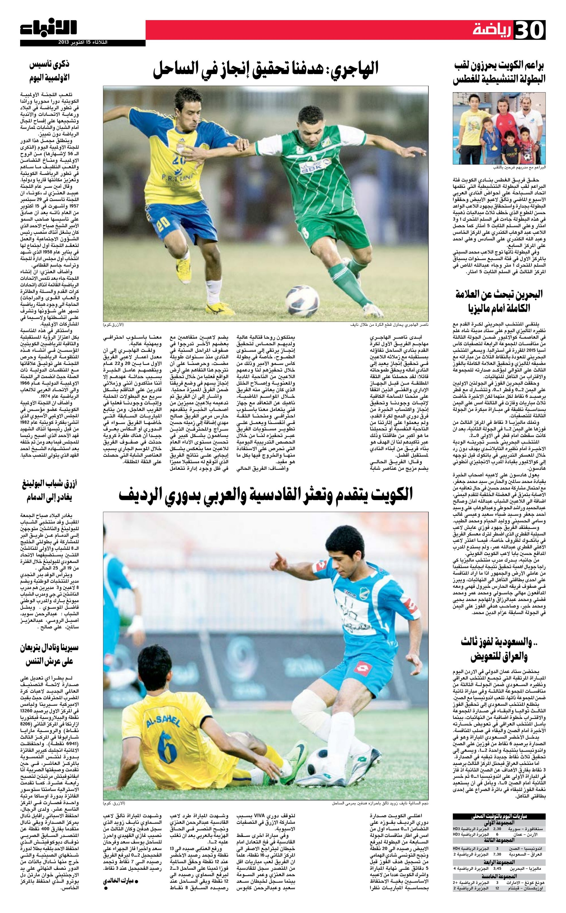

يناير ١٩٥٨، كما نشر في ٢٠١٣ و٢٠١٩ · صفحتان من جريدة الأنباء، ١٥ أكتوبر ٢٠١٣ (رياضة، ص ٣٠) و٣٠ يونيو ٢٠١٩ (رياضة، ص ٣٢)
جاسم القطامي أول رئيس للجنة الأولمبية الكويتية
ما هي
في ذكرى تأسيس اللجنة الأولمبية الكويتية سنة ٢٠١٣ قال أمين سرها العام عبيد العنزي لكونا إن اللجنة تأسست في ٢٩ سبتمبر ١٩٥٧ وأشهرت في ١٥ أكتوبر من العام ذاته بعد أن صادق على تأسيسها الشيخ صباح الأحمد وكان يشغل آنذاك منصب رئيس الشؤون الاجتماعية والعمل، لتعقد أول اجتماع لها في يناير ١٩٥٨ الذي شهد انتخاب أول مجلس إدارة للجنة «وترأسه جاسم القطامي». وفي سنة ٢٠١٩ تكرر «محطات تاريخية» في الأنباء أن الاجتماع الأول في يناير ١٩٥٨ «شهد انتخاب جاسم القطامي كأول رئيس للجنة»، وتبدأ قائمة الرؤساء السابقين بجاسم القطامي ثم عيسى الحمد.
أهميتها
يذكر جاسم القطامي أول رئيس للجنة الأولمبية الكويتية.
صور الصفحات


أسماء أخرى
المصادر
الأنباء، ١٥ أكتوبر ٢٠١٣، ص ٣٠؛ الأنباء، ٣٠ يونيو ٢٠١٩، ص ٣٢ (أرشيف الأنباء)
كيف كُتب هذا النص: كلاهما رواية لاحقة وليس من سجلات ١٩٥٧ و١٩٥٨، ورواية ٢٠١٣ منقولة عن أمين سر اللجنة نفسها. وتذكر صفحة رؤساء الاتحاد الكويتي لكرة القدم أن جاسم كان رئيس الاتحاد من ١٩٥٧ إلى ١٩٦١، وتصف عيسى أحمد الحمد بأنه رئيس أول مجلس أولمبي كويتي (١٩٦٢ إلى ١٩٦٩). ولم نعثر بعد على محضر اجتماع ١٩٥٨.
افتح في الموقع التفاعلي